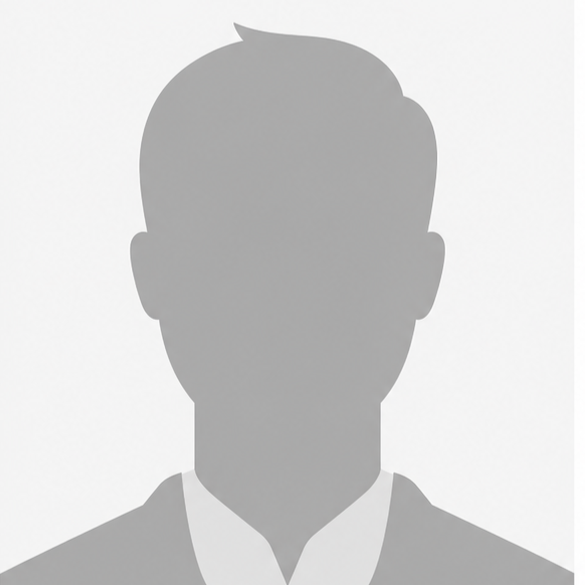
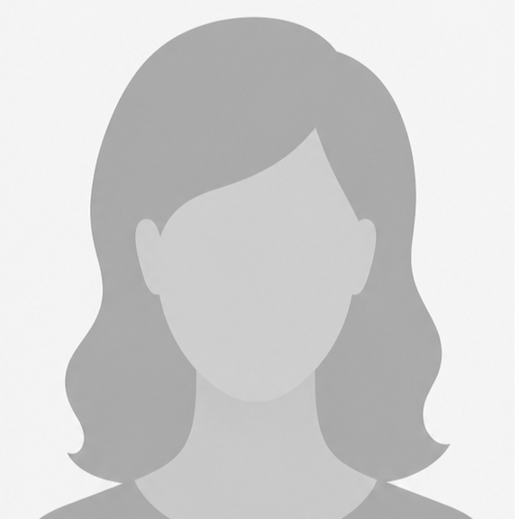

Departamente și Inițiative Internaționale
O structură organizată prin care Asociația Forța Vieții dezvoltă proiecte educaționale, sociale, culturale, medicale, logistice și comunitare în România, Republica Moldova, Austria și alte zone unde există parteneriate și inițiative locale.
Departamentul de Educație, Mentorare și Formare
„Recuperăm cunoștințe, modelăm conștiințe, dezvoltăm deprinderi, zidim viitorul prin valori.”
Acest departament se concentrează pe investiția în capitalul uman, oferind copiilor și tinerilor instrumentele necesare pentru a-și construi un viitor demn.
Departamentul de Asistență Socială, Umanitară și Comunitară
„Alinăm suferința, restaurăm demnitatea, dăruim speranță prin fapte.”
Misiunea noastră este de a fi brațul întins către cei aflați în pragul deznădejdii, oferind ajutor concret acolo unde nevoile sunt cele mai mari.
Departamentul de Artă, Muzică și Cultură
„Cultivăm talentul, armonizăm sufletul, înălțăm spiritul prin muzică.”
Credem în puterea artei de a disciplina mintea și de a vindeca sufletul, oferind comunității o alternativă culturală bazată pe valori înalte.
Departamentul de Sănătate, Consiliere și Misiune
„Vindecăm trupul, liniștim mintea, restaurăm sufletul prin credință.”
Abordăm ființa umană în întregimea ei, oferind suport medical acolo unde sistemul public nu ajunge și consiliere spirituală pentru regăsirea sensului.
Departamentul de Logistică, Administrare și Dezvoltare
„Zidim baze, gestionăm resurse, asigurăm viitorul prin integritate.”
Acest departament susține funcționarea și dezvoltarea întregii activități a Asociației Forța Vieții. Aici sunt coordonate resursele logistice, infrastructura, administrarea internă, transportul, dezvoltarea regională și comunicarea organizațională, pentru ca proiectele desfășurate în comunități să poată funcționa eficient și pe termen lung.
INIȚIATIVE INTERNAȚIONALE
„Construim punți, sprijinim oameni, dezvoltăm inițiative peste granițe.”
O secțiune dedicată proiectelor și colaborărilor dezvoltate în afara României sau împreună cu parteneri internaționali, având ca scop sprijinirea comunităților vulnerabile, dezvoltarea relațiilor dintre oameni și crearea unor inițiative sustenabile pe termen lung.
ECHIPA FORȚA VIEȚII

Popa Florin Emanuel
Coordonator General
Coordonator Departamentul de Sănătate, Consiliere și Misiune
Coordonator proiect: Comunități pentru comunități

Băloi Ioan Ilie
Coordonator Departamentul de Educație, Mentorare și Formare
Coordonator proiect: Formând oameni, zidim comunități

Gorgan Andreia Lidia
Coordonator Departamentul de Asistență Socială, Umanitară și Comunitară
Coordonator proiect: Sprijin pentru Ucraina & Dincolo de granițe

Luncan Octavian
Coordonator Departamentul de Artă, Muzică și Cultură
Coordonator proiect: Cântând în echipă

Popa David Emanuel
Coordonator Departamentul de Logistică, Administrare și Dezvoltare

Abiam Căprar
Coordonator proiect: Cortul întâlnirii

Adam Dumitru
Coordonator proiect: Fii cea mai bună versiune a ta

Avrămoni Raul
Coordonator proiect: Re:Start

Birișu Titus
Coordonator proiect: Cuptorul prieteniei
Crăciunescu Cristian
Coordonator proiect: Căsuța din nucul bătrân

Cristescu Andrei
Coordonator proiect: Tabere care transformă

Dăncescu Dan Claudiu
Coordonator proiect: Zâmbet în prag

Gheorghian Adrian
Coordonator proiect: Tabere care transformă

Gheorghian Emilia
Coordonator proiect: Sănătate pentru trup și suflet

Gheorghian Gheorghe
Coordonator proiect: Fapte care vorbesc

Gheorghian Maria
Coordonator proiect: Sănătate pentru trup și suflet
Gintagan Marius
Coordonator proiect: 8 martie în sate uitate

Hiram Childs
Coordonator proiect: Sănătate trup și suflet
Iorgoni Dorel
Coordonator proiect: Lumină din satul uitat

Măgduț Ana-Maria
Coordonator proiect: Sănătate trup și suflet

Măgerușan Cristian
Coordonator proiect: Tabere care transformă
Marian Covaș
Coordonator proiect: O lumină în Piatra

Marinescu Marius
Coordonator proiect: Fii cea mai bună versiune a ta

Nagy Debora
Coordonator Media și comunicare

Nagy Ruben
Coordonator proiect: Tabere care transformă

Parva Florentina
Coordonator proiect: Recitalul speranței

Perca Oana
Coordonator proiect: Fii cea mai bună versiune a ta

Poiată Tudor
Coordonator proiect: Uniți pentru Ucraina

Popa Anda
Coordonator proiect: Sensibil la nevoile altora

Popa Dorina Neli
Coordonator proiect: Vindecare pentru inimi frânte
Popa Eusebio
Coordonator proiect: Glasuri pentru cei uitați
Popa Luminița
Coordonator proiect: Dar din cer, bucurie în cutie
Pop Vasile
Coordonator proiect: Comunități pentru comunități

Popescu Felicia
Coordonator proiect: Sănătate trup și suflet

Richard McRorie
Coordonator proiect: Sănătate trup și suflet
Șoanda Andreea
Coordonator proiect: Un copil adoptat, o șansă creată

Șoanda Solomon
Coordonator proiect: Dincolo de granițe

Ștefoni Delia
Coordonator proiect: Note muzicale

Terlea Violeta
Coordonator proiect: Perle ascunse
Țistoi Mariana
Coordonator proiect: Coșul cu bunătăți

Vinars Nicolae
Coordonator proiect: Speranță după inundații și alte calamități

Vulc Constantin
Coordonator proiect: Iluzia Libertății